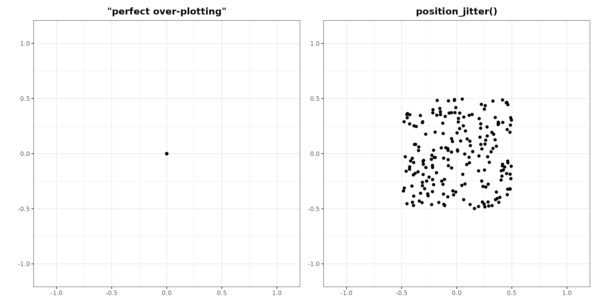
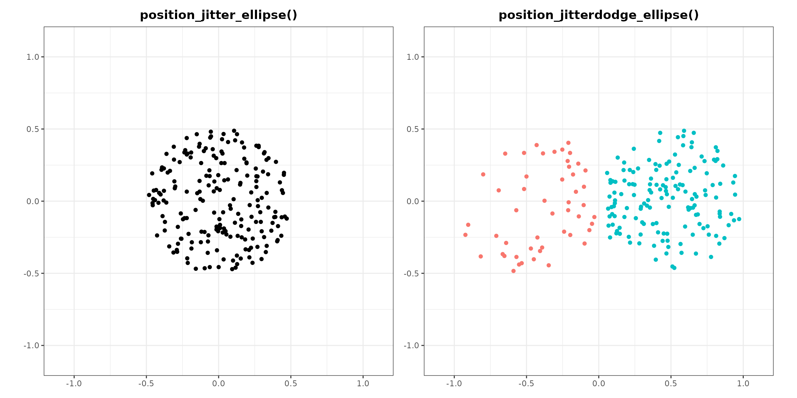
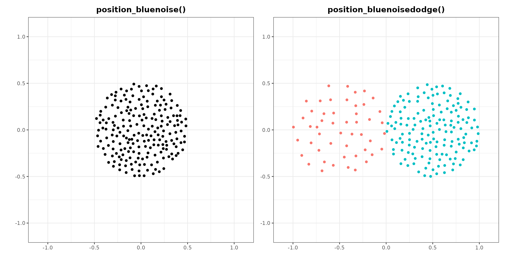
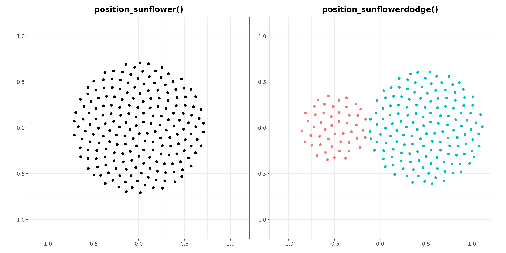
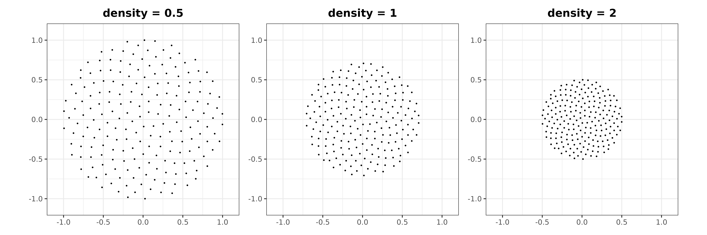
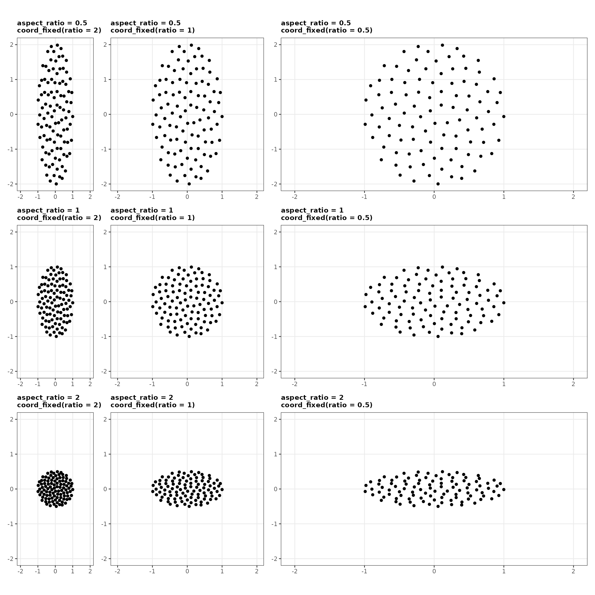
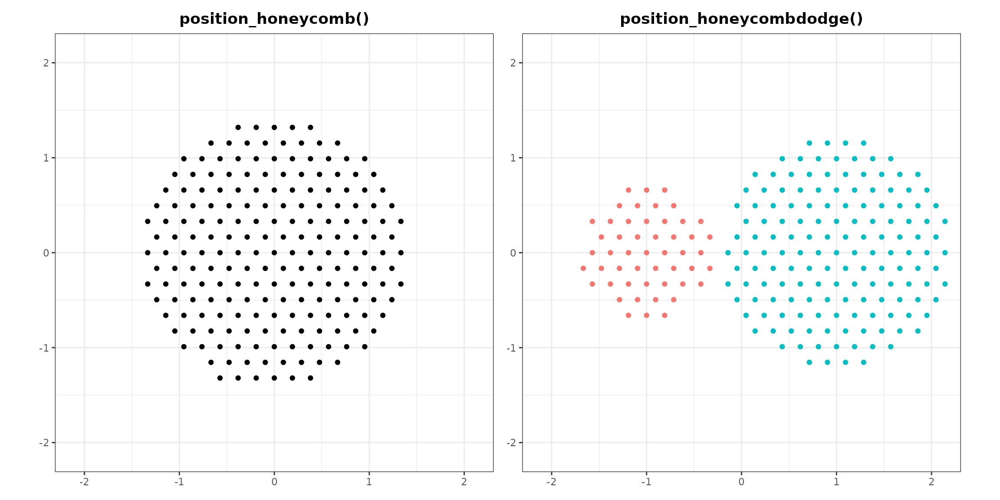
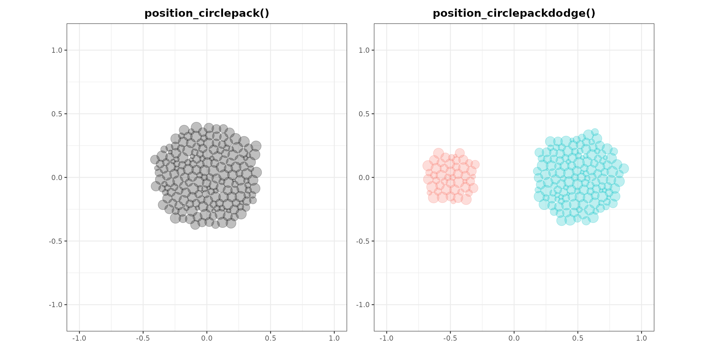
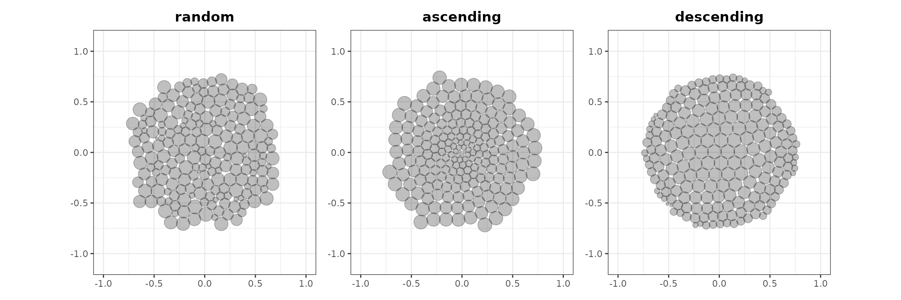
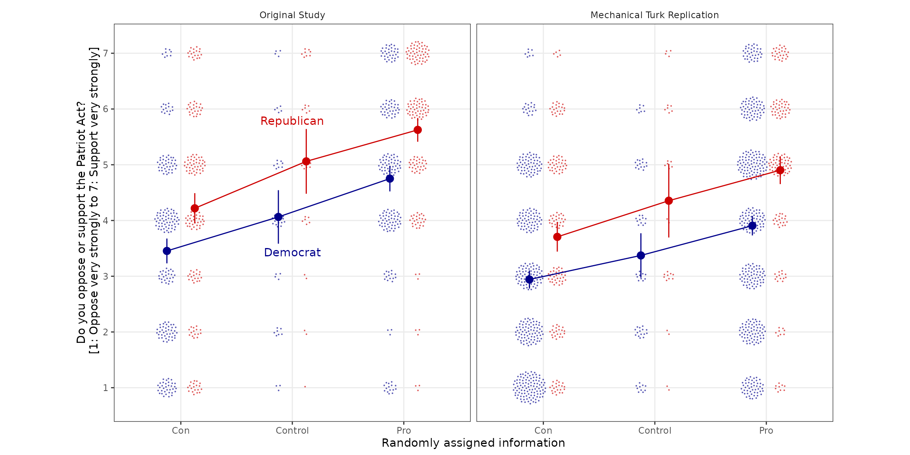

Visualize as you randomize
vayr-vignette.RmdThe goal of vayr is to provide ggplot2
extensions that foster “visualize as you randomize” principles. These
principles are outlined in detail in “Visualize As You Randomize:
Design-based Statistical Graphs for Randomized Experiments,” a chapter
in Advances in Experimental Political Science (PDF, DOI). The package
includes position adjustments that avoid over-plotting, which helps
organize “data-space” to better contextualize statistical models.
Installation
The release version of vayr can be installed from CRAN,
and the development version can be installed from GitHub using a package like
remotes, devtools, or pak.
vayr relies on ggplot2,
packcircles, and withr, so these must be
installed as well.
# From CRAN
install.packages("vayr")
# From GitHub
# install.packages("pak")
pak::pak("acoppock/vayr")Contents
vayr contains a handful of ggplot2
functions that apply as position adjustments to “point-like” geoms such
as geom_point or geom_text:
-
position_jitter_ellipse()andposition_jitterdodge_ellipse() -
position_bluenoise()andposition_bluenoisedodge() -
position_sunflower()andposition_sunflowerdodge() -
position_honeycomb()andposition_honeycombdodge() -
position_circlepack()andposition_circlepackdodge()
These functions avoid over-plotting, so they are especially useful when plotting discrete rather than continuous data. To demonstrate, we use them below to visualize synthetic data, over-plotted at the origin.
library(dplyr)
library(estimatr)
library(ggplot2)
library(patchwork)
library(vayr)
set.seed(1)
dat <- data.frame(
x = c(rep(0, 200)),
y = c(rep(0, 200)),
group = (rep(c("A", "B", "B", "B"), 50)),
size = runif(200, 0, 1)
)If position is the product of discrete variables alone, then
over-plotting is of particular concern. position_jitter()
can mitigate it. It introduces variation by randomly sampling points on
a rectangle. This approach is effective but can be unattractive. The
position adjustments in vayr aim to do better.
# perfectly over-plotted points
over_plot <- ggplot(dat, aes(x = x, y = y)) +
geom_point() +
coord_equal(xlim = c(-1.1, 1.1),
ylim = c(-1.1, 1.1)) +
theme_bw() +
theme(axis.title = element_blank(),
plot.title = element_text(hjust = 0.5, face = "bold")) +
ggtitle('"perfect over-plotting"')
# position_jitter()
jitter_plot <- ggplot(dat, aes(x = x, y = y)) +
geom_point(position = position_jitter(width = 0.5,
height = 0.5)) +
coord_equal(xlim = c(-1.1, 1.1),
ylim = c(-1.1, 1.1)) +
theme_bw() +
theme(axis.title = element_blank(),
plot.title = element_text(hjust = 0.5, face = "bold")) +
ggtitle("position_jitter()")
over_plot + jitter_plot
Position Jitter Ellipse
position_jitter_ellipse() adds elliptical random noise
to perfectly over-plotted points, offering a pleasing way to visualize
many points that represent the same position. The benefit of sampling on
an ellipse of a given height and width rather
than on a rectangle is that the resulting dispersion retains the
impression of a single point. The size of the ellipses stays constant,
while their density varies depending on the amount of data.
# position_jitter_ellipse()
jitter_ellipse_plot <- ggplot(dat, aes(x = x, y = y)) +
geom_point(position = position_jitter_ellipse(width = 0.5,
height = 0.5)) +
coord_equal(xlim = c(-1.1, 1.1),
ylim = c(-1.1, 1.1)) +
theme_bw() +
theme(axis.title = element_blank(),
plot.title = element_text(hjust = 0.5, face = "bold")) +
ggtitle("position_jitter_ellipse()")
# position_jitterdodge_ellipse()
jitterdodge_ellipse_plot <- ggplot(dat, aes(x = x, y = y, color = group)) +
geom_point(position = position_jitterdodge_ellipse(dodge.width = 2,
jitter.width = 0.5,
jitter.height = 0.5)) +
coord_equal(xlim = c(-1.1, 1.1),
ylim = c(-1.1, 1.1)) +
theme_bw() +
theme(legend.position = "none",
axis.title = element_blank(),
plot.title = element_text(hjust = 0.5, face = "bold")) +
ggtitle("position_jitterdodge_ellipse()")
jitter_ellipse_plot + jitterdodge_ellipse_plot
Position Blue Noise
position_bluenoise() fills the same elliptical field as
position_jitter_ellipse(), but places the points so that no
two land much closer together than the rest. Sampling uniformly at
random, which is what jittering does, leaves visible knots and voids: in
a draw of 250 points the closest pair typically sits about a fifteenth
of the median spacing apart, and a reader cannot tell those knots from
real structure. The arrangement here has the even spacing of a sunflower
while still looking unstructured, so nobody mistakes a spiral arm for a
finding. It is the pattern the eye’s own photoreceptors are laid out
in.
# position_bluenoise()
bluenoise_plot <- ggplot(dat, aes(x = x, y = y)) +
geom_point(position = position_bluenoise(width = 0.5,
height = 0.5)) +
coord_equal(xlim = c(-1.1, 1.1),
ylim = c(-1.1, 1.1)) +
theme_bw() +
theme(axis.title = element_blank(),
plot.title = element_text(hjust = 0.5, face = "bold")) +
ggtitle("position_bluenoise()")
# position_bluenoisedodge()
bluenoisedodge_plot <- ggplot(dat, aes(x = x, y = y, color = group)) +
geom_point(position = position_bluenoisedodge(dodge.width = 2,
scatter.width = 0.5,
scatter.height = 0.5)) +
coord_equal(xlim = c(-1.1, 1.1),
ylim = c(-1.1, 1.1)) +
theme_bw() +
theme(legend.position = "none",
axis.title = element_blank(),
plot.title = element_text(hjust = 0.5, face = "bold")) +
ggtitle("position_bluenoisedodge()")
bluenoise_plot + bluenoisedodge_plot
Position Sunflower
position_sunflower() arranges perfectly over-plotted
points using a sunflower algorithm, which produces a pattern that
resembles the seeds of a sunflower, working from the inside out in the
order of the data. The parameters for this position adjustment are
density and aspect_ratio. The size of the
flowers varies depending on the amount of over-plotting, but the density
of the pattern remains constant. A point with nothing over-plotting it
stays where it is. We generally recommend pairing the position
adjustment with coord_equal(), in which case the default
aspect ratio of 1 yields perfectly circular flowers, but the aspect
ratio of the flowers can be adjusted if need be.
# position_sunflower()
sunflower_plot <- ggplot(dat, aes(x = x, y = y)) +
geom_point(position = position_sunflower(density = 1,
aspect_ratio = 1)) +
coord_equal(xlim = c(-2.1, 2.1),
ylim = c(-2.1, 2.1)) +
theme_bw() +
theme(axis.title = element_blank(),
plot.title = element_text(hjust = 0.5, face = "bold")) +
ggtitle("position_sunflower()")
# position_sunflowerdodge()
sunflowerdodge_plot <- ggplot(dat, aes(x = x, y = y, color = group)) +
geom_point(position = position_sunflowerdodge(width = 4,
density = 1,
aspect_ratio = 1)) +
coord_equal(xlim = c(-2.1, 2.1),
ylim = c(-2.1, 2.1)) +
theme_bw() +
theme(legend.position = "none",
axis.title = element_blank(),
plot.title = element_text(hjust = 0.5, face = "bold")) +
ggtitle("position_sunflowerdodge()")
sunflower_plot + sunflowerdodge_plot
The density parameter controls the density of the
pattern. A density of 1 is normalized to 100 points in a unit circle; a
density of 2, 200 points; and a density of 0.5, 50 points. Because
density is normalized relative to Cartesian units, its visual effect
depends on the ranges of the axes and the dimensions of the saved image.
Smaller ranges or larger dimensions require a greater density to produce
the same visual effect. Point size matters too.

The aspect_ratio parameter changes the aspect ratio of
the flowers, which is their width divided by their height. The parameter
earns its keep when the position adjustment is used without
coord_equal(). The flowers can be made wider or taller to
compensate for the aspect ratio of the axes or the image. Set
aspect_ratio to the reciprocal of the distortion you are
correcting: flowers that render twice as wide as they are tall need an
aspect_ratio of 0.5.
For instance, consider a plot with an x axis that ranges from 0 to 1,
and a y axis that ranges from 0 to 2. Saving this plot as a square image
would squish the y axis, resulting in flowers twice as wide as they are
tall. An aspect_ratio of 0.5 offsets that distortion.
Under coord_fixed() the arithmetic is simpler, because
ratio already expresses the distortion you need to undo:
set aspect_ratio to the same value as ratio
and the flowers come out circular. The two parameters agree in value
while being defined in opposite directions, since
aspect_ratio is width to height and ratio is
height to width. The grid below crosses the two, and the circular
flowers appear where the values match, running from the top right to the
bottom left.

Position Honeycomb
position_honeycomb() arranges the same points on a
hexagonal lattice, the densest packing of equal circles in the plane. It
takes the same density and aspect_ratio as
position_sunflower() and covers the same footprint at the
same density, so the two are interchangeable and the choice between them
is about looks: the lattice reads as countable and orderly, the spiral
as organic and without a preferred direction.
position_beeswarm() in the ‘ggbeeswarm’ package also
offers a hexagonal method, and does a different job. A beeswarm spreads
points along one axis to show the shape of a distribution, so perfectly
over-plotted points come out as a line rather than a cluster, and its
hexagonal and square methods move points off their true value on the
data axis. Reach for a beeswarm to show a distribution, and for this to
show a count.
# position_honeycomb()
honeycomb_plot <- ggplot(dat, aes(x = x, y = y)) +
geom_point(position = position_honeycomb(density = 1,
aspect_ratio = 1)) +
coord_equal(xlim = c(-2.1, 2.1),
ylim = c(-2.1, 2.1)) +
theme_bw() +
theme(axis.title = element_blank(),
plot.title = element_text(hjust = 0.5, face = "bold")) +
ggtitle("position_honeycomb()")
# position_honeycombdodge()
honeycombdodge_plot <- ggplot(dat, aes(x = x, y = y, color = group)) +
geom_point(position = position_honeycombdodge(width = 4,
density = 1,
aspect_ratio = 1)) +
coord_equal(xlim = c(-2.1, 2.1),
ylim = c(-2.1, 2.1)) +
theme_bw() +
theme(legend.position = "none",
axis.title = element_blank(),
plot.title = element_text(hjust = 0.5, face = "bold")) +
ggtitle("position_honeycombdodge()")
honeycomb_plot + honeycombdodge_plot
Position Circle Pack
position_circlepack() uses a circle packing algorithm
from packcircles to arrange perfectly over-plotted points
of varying sizes into an elliptical area. It also takes
density and aspect_ratio as parameters. Do not
confuse it with geom_circlepack() from
ggcirclepack, which can be found on GitHub.
# position_circlepack()
circlepack_plot <- ggplot(dat, aes(x = x, y = y, size = size)) +
geom_point(alpha = 0.25,
position = position_circlepack(density = 0.25,
aspect_ratio = 1)) +
coord_equal(xlim = c(-1, 1),
ylim = c(-1.1, 1.1)) +
theme_bw() +
theme(legend.position = "none",
axis.title = element_blank(),
plot.title = element_text(hjust = 0.5, face = "bold")) +
ggtitle("position_circlepack()")
# position_circlepackdodge()
circlepackdodge_plot <- ggplot(dat, aes(x = x, y = y, color = group, size = size)) +
geom_point(alpha = 0.25,
position = position_circlepackdodge(width = 2,
density = 0.25,
aspect_ratio = 1)) +
coord_equal(xlim = c(-1, 1),
ylim = c(-1.1, 1.1)) +
theme_bw() +
theme(legend.position = "none",
axis.title = element_blank(),
plot.title = element_text(hjust = 0.5, face = "bold")) +
ggtitle("position_circlepackdodge()")
circlepack_plot + circlepackdodge_plot
Like position_sunflower(),
position_circlepack() works from the inside out in the
order of the data. Arranging the data by size therefore organizes the
points accordingly.
# random size, base plot
random <- ggplot(dat, aes(x = x, y = y, size = size)) +
geom_point(alpha = 0.25,
position = position_circlepack(density = 0.075,
aspect_ratio = 1)) +
coord_equal(xlim = c(-1, 1),
ylim = c(-1.1, 1.1)) +
theme_bw() +
theme(legend.position = "none",
axis.title = element_blank(),
plot.title = element_text(hjust = 0.5, face = "bold")) +
ggtitle("random")
# ascending size
ascending <- random %+%
arrange(dat, size) +
ggtitle("ascending")
#> Warning: <ggplot> %+% x was deprecated in ggplot2 4.0.0.
#> ℹ Please use <ggplot> + x instead.
#> This warning is displayed once per session.
#> Call `lifecycle::last_lifecycle_warnings()` to see where this warning was
#> generated.
# descending size
descending <- random %+%
arrange(dat, desc(size)) +
ggtitle("descending")
random + ascending + descending
Example
vayr also includes data from the Patriot Act experiment
described in Persuasion in
Parallel. The Patriot Act was an anti-terrorism law, and the
patriot_act dataset comes from an experiment that measured
support for this law after randomly exposing participants to statements
that cast the legislation in either a negative or positive light. The
experiment was conducted in 2009 with a nationwide sample, and it was
replicated in 2015 with a sample of MTurkers. In both instances, the
treatments had a similar effect on Democrats and Republicans. The data
hold four variables:
-
sample_label, the study to which the participant belonged -
pid_3, the partisanship of the participant -
T1_content, the statements to which the participant was exposed -
PA_support, the participant’s post-treatment support for the Patriot Act
The figure below visualizes the data using
position_sunflowerdodge() from vayr. It
adjusts both density and aspect_ratio: a high
density compensates for the small point size, and a tall
aspect_ratio compensates for the wide plot.
# A df for statistical models
summary_df <- patriot_act |>
group_by(T1_content, pid_3, sample_label) |>
reframe(tidy(lm_robust(PA_support ~ 1)))
# A df for direct labels
label_df <- summary_df |>
filter(sample_label == "Original Study", T1_content == "Control") |>
mutate(
PA_support = case_when(
pid_3 == "Democrat" ~ conf.low - 0.15,
pid_3 == "Republican" ~ conf.high + 0.15
)
)
ggplot(patriot_act, aes(T1_content, PA_support, color = pid_3, group = pid_3)) +
# the data
geom_point(position = position_sunflowerdodge(width = 0.5,
density = 50,
aspect_ratio = 0.5),
size = 0.1, alpha = 0.5) +
# the statistical model
geom_line(data = summary_df, aes(x = T1_content, y = estimate),
position = position_dodge(width = 0.5), linewidth = 0.5) +
geom_point(data = summary_df, aes(x = T1_content, y = estimate),
position = position_dodge(width = 0.5), size = 3) +
geom_linerange(data = summary_df, aes(x = T1_content, y = estimate,
ymin = conf.low, ymax = conf.high),
position = position_dodge(width = 0.5)) +
# the direct labels
geom_text(data = label_df, aes(label = pid_3)) +
# the rest
scale_color_manual(values = c("blue4", "red3")) +
scale_y_continuous(breaks = 1:7) +
coord_fixed(ratio = 0.5) + # ratio for coord_fixed is y/x rather than x/y
facet_wrap(~sample_label) +
theme_bw() +
theme(legend.position = "none",
strip.background = element_blank(),
panel.grid.minor = element_blank()) +
labs(y = "Do you oppose or support the Patriot Act?
[1: Oppose very strongly to 7: Support very strongly]",
x = "Randomly assigned information")
#> Warning: Removed 3 rows containing missing values or values outside the scale range
#> (`geom_point()`).
The figure shows the design, the data, and the analysis at once. Each point is one respondent, arranged in flowers so that the number of subjects sitting on each of the seven scale points stays visible. The lines and vertical bars are group means with their 95 percent confidence intervals.
Republicans support the Patriot Act more than Democrats do, by about a point on the seven-point scale, in both the original study and the replication. The treatments move the two groups by similar amounts and in the same direction. In the original study, pro-Patriot Act statements raise support by 0.69 points (robust standard error: 0.27) among Democrats and by 0.57 (0.30) among Republicans, while anti-Patriot Act statements lower it by 0.61 (0.26) and 0.84 (0.32). The replication reproduces the pattern at slightly smaller magnitudes. The lines run roughly parallel.